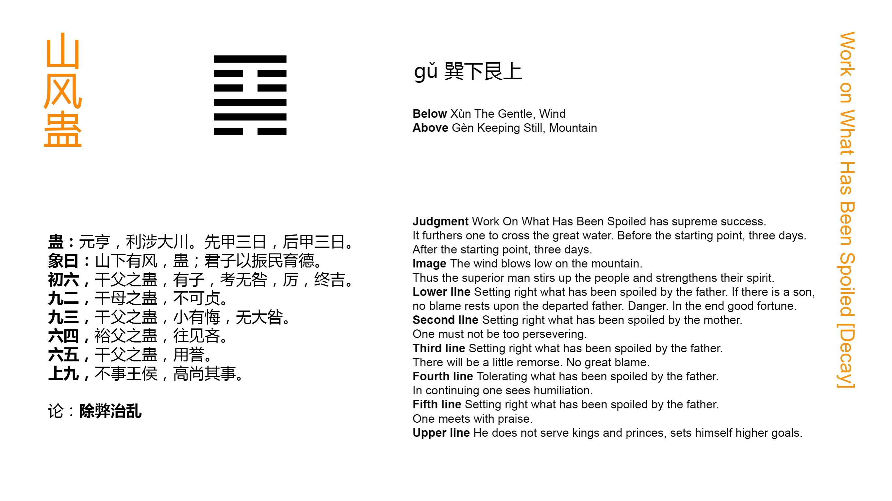

Chinese: 蛊 ䷑ gǔ

Gǔ ䷑ indicates great progress and success (to him who deals properly with the condition represented by it). There will be advantage in (efforts like that of) crossing the great stream. (He should weigh well, however, the events of) three days before the turning point, and those (to be done) three days after it.
1. The first SIX, divided, shows (a son) dealing with the troubles caused by his father. If he be an (able) son, the father will escape the blame of having erred. The position is perilous, but there will be good fortune in the end.
䷑ changing to ䷙
Matching Line 1 in Adjacent Hexagram: ䷐
2. The second NINE, undivided, shows (a son) dealing with the troubles caused by his mother. He should not (carry) his firm correctness (to the utmost).
䷑ changing to ䷳
Matching Line 2 in Adjacent Hexagram: ䷐
3. The third NINE, undivided, shows (a son) dealing with the troubles caused by his father. There may be some small occasion for repentance, but there will not be any great error.
䷑ changing to ䷃
Matching Line 3 in Adjacent Hexagram: ䷐
4. The fourth SIX, divided, shows (a son) viewing indulgently the troubles caused by his father. If he go forward, he will find cause to regret it.
䷑ changing to ䷱
Matching Line 4 in Adjacent Hexagram: ䷐
5. The fifth SIX, divided, shows (a son) dealing with the troubles caused by his father. He obtains the praise of using (the fit instrument for his work).
䷑ changing to ䷸
Matching Line 5 in Adjacent Hexagram: ䷐
6. The sixth NINE, undivided, shows us one who does not serve either king or feudal lord, but in a lofty spirit prefers (to attend to) his own affairs.
䷑ changing to ䷭
Matching Line 6 in Adjacent Hexagram: ䷐
In the 6th Appendix it is said, They who follow another are sure to have services (to perform), and hence Suí ䷐ is followed by Gǔ ䷑. But Gǔ ䷑ means the having painful or troublesome services to do. It denotes here a state in which things are going to ruin, as if through poison or venomous worms; and the figure is supposed to describe the arrest of the decay and the restoration to soundness and vigour, so as to justify its auspice of great progress and success. To realise such a result, however, great efforts will be required, as in crossing the great stream; and a careful consideration of the events that have brought on the state of decay, and the measures to be taken to remedy it is also necessary. See Appendix I on the 'three days.'
The subject of line 1, and of all the other lines, excepting perhaps 6, appears as a son. Yet the line itself is of the yīn nature, and the trigram in which it plays the principal part is also yīn.
Line 2 is strong, and of the yáng nature, with the yīn line 5 as its proper correlate. In line 2, 5 appears as the mother; but its subject there is again a son, and the upper trigram ☶ altogether is yáng. I am unable to account for these things. As is said in the note of Regis on line 2: -- 'These lines of the Amorites, from the mother to the denomination is merely translatitia these things, and, as the record vulgaris, to the explanation of the tower to the Sentences of them according to its mother, and for his son, it must be said. Nor is it the mystery of, look for the name of the account will be given, if any man is in either. Why are other people in the shapes of lines now king, but now Vasallos, already government minister and then chief weapons charge report called? That is applied to the word lines, words in a sentence sense queniadmodum making techniques of the book Shī Jīng teaches Mencius, V, i, ode 4.2.'
We must leave this difficulty. Line 1 is weak, and its correlate 4 is also weak. What can its subject do to remedy the state of decay? But the line is the first of the figure, and the decay is not yet great. By giving heed to the cautions in the Text, he will accomplish what is promised.
The ruler in line 5 is represented by a weak line, while 2 is strong. Thus the symbolism takes the form of a son dealing with the prevailing decay induced somehow by his mother. But a son must be very gentle in all his intercourse with his mother, and especially so, when constrained by a sense of duty to oppose her course. I do not think there is anything more or better to be said here. The historical interpretation adopted by Regis and his friends, that the father here is king Wén, the mother Tài Sì, and the son king Wǔ, cannot be maintained.
I have searched, but in vain, for the slightest Chinese sanction of it, and it would give to Gǔ ䷑ the meaning of misfortunes endured, instead of troubles caused.
Line 3 is strong, and not central, so that its subject might well go to excess in his efforts. But this tendency is counteracted by the line's place in the trigram Xùn ☴, often denoting lowly submission.
Line 4 is weak, and in an even place, which intensifies that weakness. Hence comes the caution against going forward.
The weak line 5, as has been said, is the seat of the ruler; but its proper correlate is the strong 2, the strong siding champion minister, to whom the work of the hexagram is delegated.
Line 6 is strong, and has no proper correlate below. Hence it suggests the idea of one outside the sphere of action, and taking no part in public affairs, but occupied with the culture of himself.